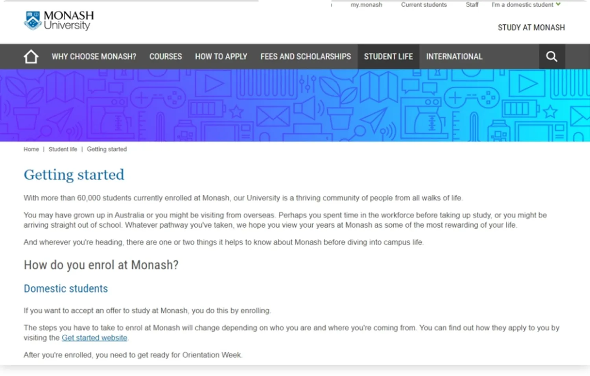
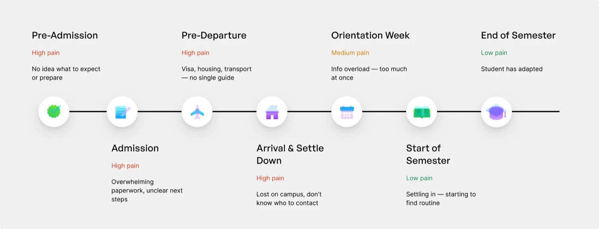
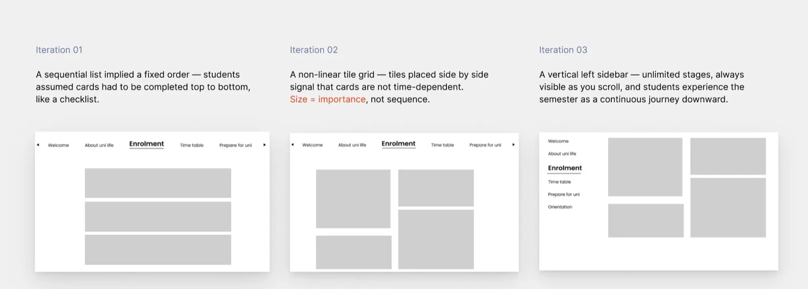
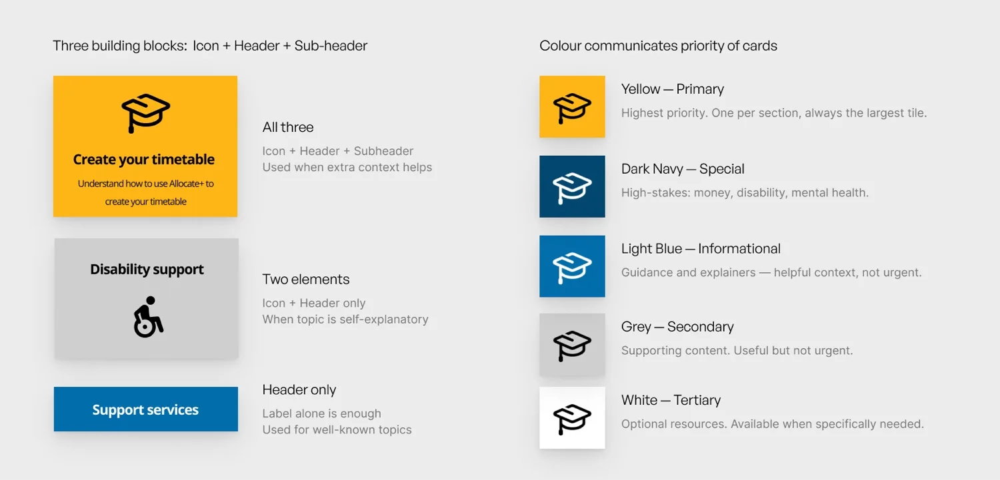
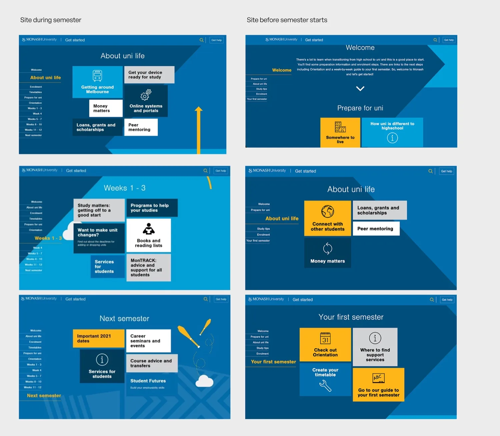
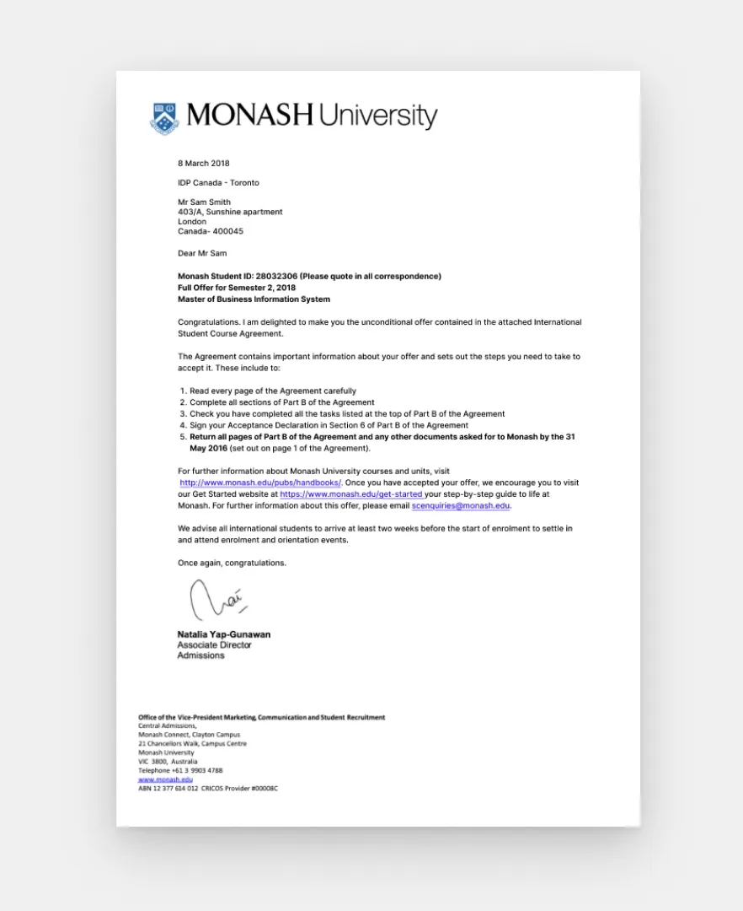

Monash — “Get Started” Redesign
UI/UX Design · 2017
A student onboarding experience, redesigned to guide 15,000+ international students through their first semester — replacing a scattered web of links with one structured starting point.
Project overview
Starting university in a new country is overwhelming. International students arriving at Monash had no clear starting point — the existing experience was scattered, unstructured, and organised around the website rather than the student's journey.

Moving abroad for university isn't just about studying — it's a full life transition. Research into the old experience surfaced sharp gaps:
- 90% had no idea what to prepare before arriving in Australia.
- 82% didn't know about the facilities the university provided.
- No Australian university offered a structured journey built around the student's semester timeline.
I mapped the full student journey by pain level — and the spike was unmistakable: Pre-Admission through Arrival all scored high pain, long before students ever set foot on campus.

The layout had to communicate that this was a journey, not a checklist. I worked through three directions — a sequential list (felt like fixed, mandatory steps), a non-linear tile grid (size signals importance, not order), and a vertical left sidebar (unlimited stages, always visible, experienced as one continuous journey). The sidebar won.

A small, consistent card system carried the whole site:
- Card anatomy — three building blocks (icon + header + sub-header), scaled back to just a header when a topic is self-explanatory.
- Colour = priority — yellow for the single highest-priority action per section, dark navy for high-stakes topics (money, disability, mental health), blues for informational, grey and white for supporting content.

The result adapts to where each student is in their journey. Before the semester starts, it surfaces preparation and orientation; during the semester, it shifts to week-by-week study support — same site, different view.

The impact
The clearest signal of impact: Monash leadership chose to replace every scattered link with this one page — and embedded it directly into the official offer letter sent to every international student, alongside the steps to accept their place.
